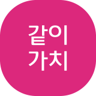

카카오같이가치는
누구나 참여하고 변화를 만들어나가는
카카오의 사회공헌 플랫폼입니다.
기부는 어려워요...

다양한 기부 방식을 통해 누구나 사회변화에 참여할 수 있는 기부 플랫폼으로,
사회의 긍정적인 따뜻한 변화를 위한 실제적인 공익 프로젝트라면 무엇이든 모금을 할 수 있습니다.
기부자를 만나기 어려운 NGO와, 마음은 있지만 쉽게 기부할 곳은 찾지 못하는 이용자에게
쉽고 다양한 경로를 제공해 참여를 유도합니다.
11,799
개
같이가치 모금함
29,162,768
건
함께 기부한 마음
255,898
km
속마음 여행거리
3,000,372
만원
총 기부금
주위 사람들에게 같이가치 콘텐츠를 알리는 것 만으로도 나눔의 시작입니다.
나눔이 모여 함께 만든 변화는 어떨까요?
우리가 함께 만든 아름다운 변화 함께 확인해봐요